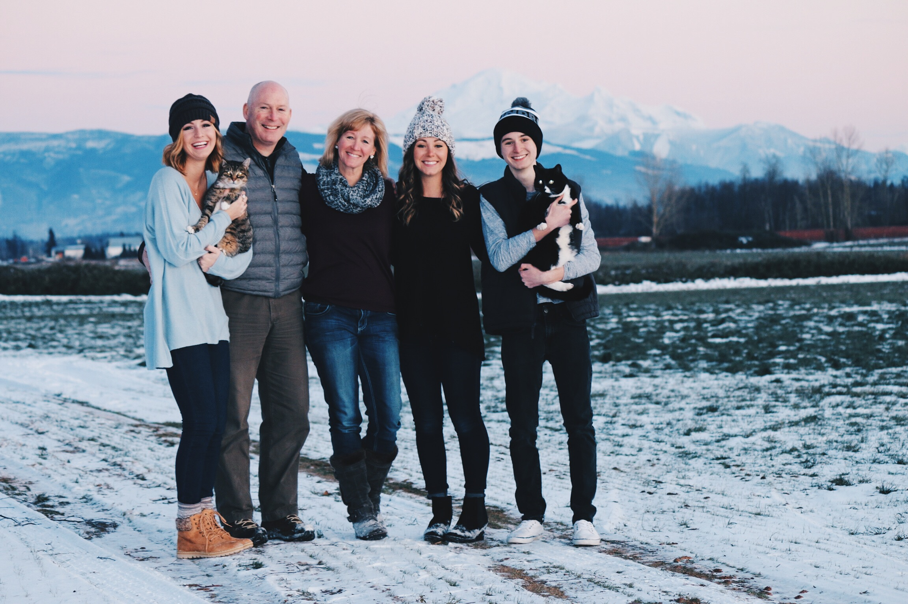

My name is Ryan Turner, I am a fourth year CS major but this is my second year at Western. I spent my freshman year at a college in Grand Rapids Michigan and another year at WCC. My family includes my mom, dad, two older sisters, two cats, and me (below). Besides comp sci, I am interested in graphic design, film, and astronomy.
